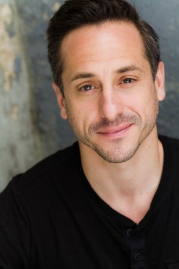

#1496 Contagion

 IMDB-Wertung: 6.6 / 10
IMDB-Wertung: 6.6 / 10  Metascore: 70
Metascore: 70 
Nachdem eine Frau nach einer Auslandsreise an einem mysteriösen Virus stirbt und ähnliche Fälle auf dem ganzen Planeten auftreten, ist schnell klar: eine Epidemie breitet sich aus, die schnell weltweit immer größere Teile der Bevölkerung hinwegrafft. Während die Wissenschaftler des amerikanischen Centers for Disease Control and Prevention Dr. Ellis Cheever, Dr. Erin Mears und Dr. Ally Hextall versuchen mehr über das Virus herauszufinden und ein Heilmittel zu entwickeln, reist Dr. Leonora Orantes von der Weltgesundheitsbehörde in Genf nach Hongkong, wo man den Ursprung der Krankheit vermutet. Unterdessen muss Mitch Emhoff mit dem Tod seiner Ehefrau fertig werden und versucht verzweifelt, seine Tochter vor einer Infektion zu schützen. Derweil schafft es der fanatische Blogger Alan Krumwiede mit seinen Texten weltweit Panik auszulösen.
Jahr: 2011
Dauer: 106 Minuten
FSK: 12
Land: USA Studio: Warner Bros.Tonspuren:
Untertitel: Deutsch,
Auflösung: 720p (1280x720) Größe: 1751 MB
Genre: Drama, Sci-Fi, Thriller
Regisseur:  Steven Soderbergh
Steven Soderbergh
Drehbuch: Scott Z. Burns
Soundtrack: Cliff Martinez
Darsteller:
 Gwyneth Paltrow als Beth Emhoff
Gwyneth Paltrow als Beth Emhoff- Tien You Chui als Li Fai
 Josie Ho als Li Fai's Sister
Josie Ho als Li Fai's Sister Matt Damon als Mitch Emhoff
Matt Damon als Mitch Emhoff- Griffin Kane als Clark Morrow
 Laurence Fishburne als Dr. Ellis Cheever
Laurence Fishburne als Dr. Ellis Cheever John Hawkes als Roger
John Hawkes als Roger Jude Law als Alan Krumwiede
Jude Law als Alan Krumwiede Monique Gabriela Curnen als Lorraine Vasquez
Monique Gabriela Curnen als Lorraine Vasquez- Sue Redman als ER Nurse #1
 Grace Rex als Carrie Anne
Grace Rex als Carrie Anne Marion Cotillard als Dr. Leonora Orantes
Marion Cotillard als Dr. Leonora Orantes Armin Rohde als Damian Leopold
Armin Rohde als Damian Leopold- Phillip James Brannon als Paramedic
- Rebecca Spence als Jon Neal's Wife
 Kate Winslet als Dr. Erin Mears
Kate Winslet als Dr. Erin Mears Larry Clarke als Dave
Larry Clarke als Dave- Anna Jacoby-Heron als Jory Emhoff
- Scott Stangland als Minnesota Health #1
- Rick Uecker als Minnesota Health #3
- Tara Mallen als Minnesota Health #4
 Jennifer Ehle als Dr. Ally Hextall
Jennifer Ehle als Dr. Ally Hextall Demetri Martin als Dr. David Eisenberg
Demetri Martin als Dr. David Eisenberg Elliott Gould als Dr. Ian Sussman
Elliott Gould als Dr. Ian Sussman Enrico Colantoni als Dennis French
Enrico Colantoni als Dennis French Bryan Cranston als RADM Lyle Haggerty
Bryan Cranston als RADM Lyle Haggerty- Dan Aho als Aaron Barnes
 Chin Han als Sun Feng
Chin Han als Sun Feng- Randy Lowell als Hedge Fund Man in Park
- Brian J. O'Donnell als Andrew
- Sau-Ming Tsang als Chinese Health Official #2
- Jim Ortlieb als Funeral Director
 Sanaa Lathan als Aubrey Cheever
Sanaa Lathan als Aubrey Cheever- Kara Zediker als Elizabeth Nygaard
- Peter A Kelly als National Guardsman
- Mary Beth Dolan als Nun
-  Jason Babinsky als Shivering Man
- Howie Johnson als Morgue Worker
- Maura Antas als Family Member , uncredited
- Neil S. Bagadiong als CDC Employee , uncredited
- Tommy Bartlett als Pfizer / Roche Board Member , uncredited
- Erik Batoog als Sick Guy , uncredited
- Raphael Baunaquis als Tallest Police Officer Checking Dr. Orantes's ID , uncredited
- Robert G. Beck als John Neal , uncredited
- Ahmed Boulane als Doctor Haddad , uncredited
- Jonez Cain als Extra , uncredited
- Melanie Case als Pharmacy Clerk , uncredited
- Liz Clare als Vaccine Recipient , uncredited
 David Cohen als News Reporter , uncredited
David Cohen als News Reporter , uncredited James Anthony Cotton als Tough guy , uncredited
James Anthony Cotton als Tough guy , uncredited
Datei: X:\2011(A-F)\Contagion (2011, FSK12, 1280x720).mkv seit 11.07.2015
Festplatte: HD 2010(G-Z)-2011(A-F)
 Es gibt insgesamt 86 Filme in der Gruppe '2011(A-F)'
Es gibt insgesamt 86 Filme in der Gruppe '2011(A-F)'